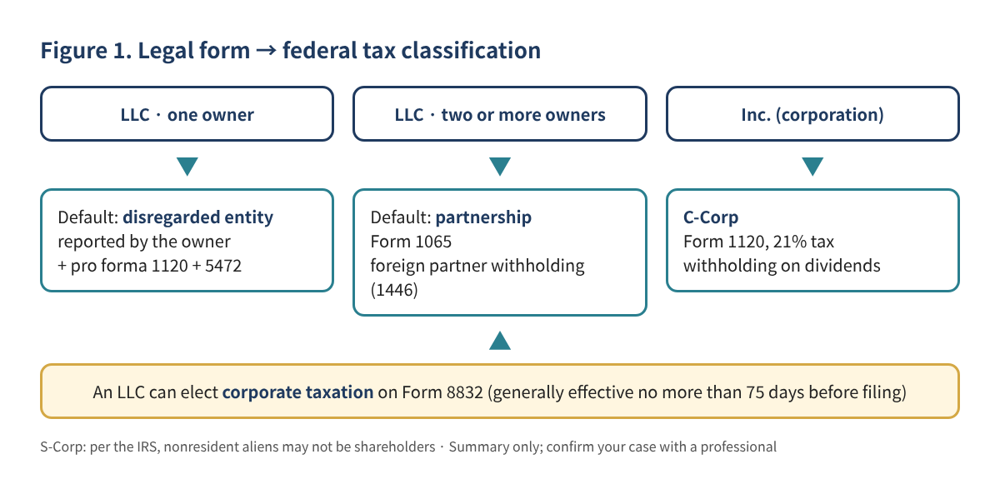
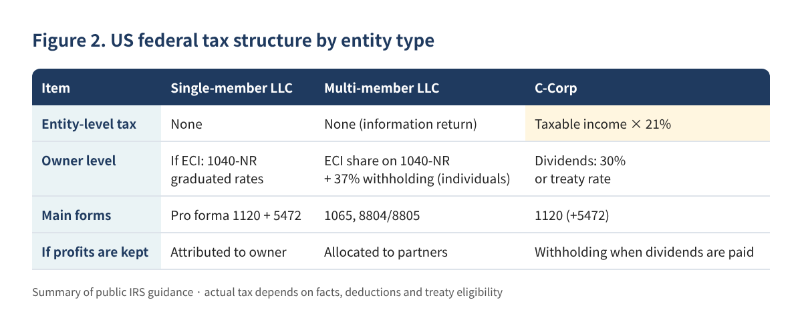
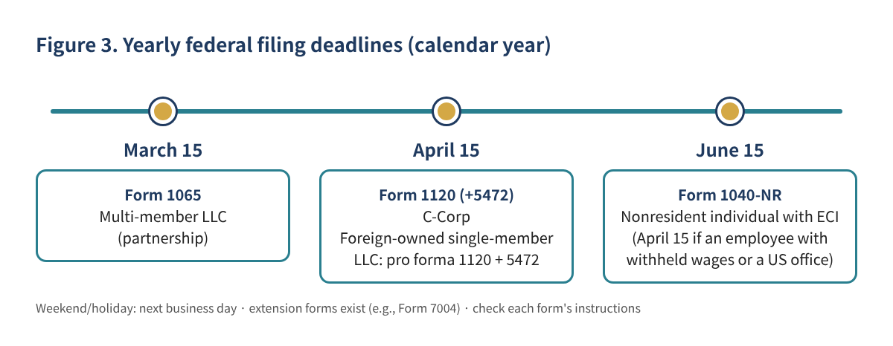

LLC or C-Corp for a Non-US Founder? How US Federal Tax Works for Each, and When You File
One of the first questions a founder living outside the US asks is whether to form an LLC or a C-Corp. The real difference is not the formation paperwork but who pays US tax, when, and on which forms. This guide compares the US federal tax structure of each option for a nonresident owner, lays out the yearly filing calendar, and lists common mistakes. Tax treaties and home-country tax are covered only at overview level.
This article is general educational information, not tax, legal or financial advice.
Who this is for
· Founders living outside the US who are choosing a US entity type
· Owners of an existing LLC weighing a corporate election on Form 8832
· Family members or advisers helping a non-US founder understand the options
1. Legal form and tax classification are two different things
An LLC is a legal form created under state law; its federal tax treatment is decided separately. According to the IRS, a domestic LLC is classified by default as follows:
- Single-member LLC: disregarded as separate from its owner, so its activity is reflected on the owner's tax return.
- LLC with two or more members: a partnership unless it elects otherwise.
- Form 8832 election: an LLC can file Form 8832 to be taxed as a corporation. The IRS LLC page says the election generally cannot take effect more than 75 days before the date it is filed.
- Inc. (corporation): a business incorporated under state law generally files as a C-Corp for federal tax.
The IRS S corporation page states that shareholders may not be nonresident aliens, so a company with a nonresident shareholder cannot elect S-Corp status.

2. The core difference: where the tax is collected
2-1. Single-member LLC (default)
The LLC itself pays no federal income tax; results flow to the owner. Whether a nonresident owner owes US tax depends mainly on whether there is a US trade or business and whether the income is effectively connected income (ECI). The IRS explains that performing personal services in the US generally counts as a US trade or business, and that activity must be considerable, continuous and regular. ECI is taxed, after allowable deductions, at the same graduated rates as US citizens and residents and is reported on Form 1040-NR.
A foreign-owned single-member LLC must also attach Form 5472 to a pro forma Form 1120, even if it has no other income tax filing requirement. See the series post on Form 5472 for details.
2-2. LLC with two or more members (partnership)
A partnership files an information return on Form 1065 and allocates income to partners. The IRS explains that a partner in a partnership engaged in a US trade or business is treated as engaged in that trade or business. The partnership must also withhold under Section 1446 on effectively connected taxable income (ECTI) allocable to foreign partners; the IRS lists 37% for non-corporate foreign partners and 21% for corporate partners.
2-3. C-Corp
A C-Corp is itself the taxpayer. The Form 1120 instructions say to multiply taxable income by 21%. When the corporation pays a dividend to a nonresident shareholder, the dividend is FDAP income, generally subject to 30% withholding or a lower treaty rate. Shareholders usually give the payer Form W-8BEN to document foreign status, and payments are reported on Form 1042-S. A 25% foreign-owned US corporation with reportable related-party transactions must also file Form 5472.
| Item | Single-member LLC | Multi-member LLC | C-Corp |
|---|---|---|---|
| Federal classification | Disregarded entity | Partnership | Corporation |
| Entity-level federal income tax | None | None (information return) | Taxable income × 21% |
| Owner level | If ECI: 1040-NR graduated rates | ECI share on 1040-NR + 37% withholding (individuals) | Dividends: 30% or treaty rate |
| Main forms | Pro forma 1120 + 5472 | 1065, 8804/8805 | 1120 (+5472) |

3. Comparing step by step
- Map US activity: note any US office, employees or inventory, and who performs services where. This is the starting point for the ECI question (confirm the conclusion with a professional).
- Count owners: one owner means a disregarded entity by default; two or more means a partnership.
- Plan use of profits: whether profits stay in the company or are paid out each year changes when C-Corp dividend tax applies.
- Consider investors: check whether a planned investment structure calls for a corporation.
- Compare filing load: list each form and due date by entity type (section 4).
- State tax: state taxes and registrations apply separately; see the 7-state comparison.
- Home-country side: confirm home-country tax and reporting with a local professional before deciding.
4. Yearly filing calendar (calendar-year filers)
| Form | Who | Due (calendar year) |
|---|---|---|
| Form 1065 | Multi-member LLC (partnership) | March 15 (15th day of 3rd month) |
| Form 1120 (+5472) | C-Corp | April 15 (15th day of 4th month) |
| Pro forma Form 1120 + 5472 | Foreign-owned single-member LLC | Same as Form 1120 |
| Form 1040-NR | Nonresident individual with ECI | April 15 or June 15 (April 15 if an employee with wages subject to withholding or with a US office or place of business; otherwise generally June 15) |
If a due date falls on a weekend or legal holiday, the next business day generally applies, and extension forms exist (Form 7004 for corporations, among others). Check each form's instructions for exact dates.

5. Worked example: Hanbit Design
Ms. Kim (an invented person), a designer living outside the US, plans to serve US clients as "Hanbit Design." The figures below are sample values for illustration; actual tax depends on the facts, deductions and treaty eligibility.
| Sample values | C-Corp (Hanbit Design Inc.) |
|---|---|
| Annual taxable income | $100,000 |
| Corporate tax (21%) | $21,000 |
| After-tax profit | $79,000 |
| Withholding if fully paid as a dividend (statutory 30% assumed) | $23,700 |
| Amount received by shareholder (US side) | $55,300 |
A treaty may reduce the dividend withholding rate, so the 30% here is the statutory rate before any treaty. Dividend withholding arises when a dividend is paid. Other tax issues that can arise when profits are kept in the company should be confirmed with a professional.
| Sample values | Single-member LLC | Two-member LLC (50:50) |
|---|---|---|
| Entity-level federal income tax | None | None |
| If income is ECI | $100,000 on 1040-NR at graduated rates | $50,000 share per member |
| Partnership withholding (individuals, 37%) | Not applicable | $18,500 per member |
| If income is not ECI | Confirm US income tax with a professional | Same |
| Annual filings | Pro forma 1120 + 5472 | 1065, 8804/8805, etc. |
A C-Corp can be taxed twice (company and dividend) and dividend withholding arises when dividends are paid; an LLC has no entity-level tax, but the owner may need to file a US individual return depending on ECI. Which is more favorable depends on US activity, profit level, distribution plans and home-country tax.
Korean residents: check Korea-side obligations
Owning a US company or US account can create obligations in Korea, such as overseas direct investment reporting under Korean foreign-exchange rules, overseas financial account reporting, and overseas subsidiary reporting to the National Tax Service. Thresholds and deadlines should be checked each year with a Korean tax professional or your bank. How US profits and dividends are taxed in Korea should also be confirmed with a Korean tax professional.
6. Tax treaties at a glance
The IRS publishes US income tax treaty documents by country; for example, the Korea treaty is listed with the year 1976. Treaties can lower withholding on some income such as dividends or interest and set rules to relieve double taxation, but eligibility and rates depend on the income type and conditions, and claiming benefits usually requires documentation such as Form W-8BEN. Confirm treaty application with a US CPA or EA and a home-country tax professional.
7. Common mistakes
- Assuming "an LLC pays no tax": there is no entity-level federal income tax, but owner-level tax and filings can still apply.
- Missing Form 5472: the IRS instructions set a $25,000 penalty for failure to file, plus $25,000 for each 30-day period the failure continues more than 90 days after IRS notice.
- Trying to elect S-Corp: the IRS says nonresident aliens may not be S corporation shareholders.
- Wrong Form 8832 effective date: it generally cannot be more than 75 days before the filing date.
- Forgetting state tax: state taxes and annual reports apply separately from the federal choice.
- Ignoring home-country reporting: US filings may be in order while home-country reporting is missed.
8. FAQ
Q. Can I start as an LLC and be taxed as a C-Corp later?
An LLC can elect corporate classification on Form 8832. There is a limit on the effective date, so check IRS guidance and a professional.
Q. If the US company has no profit, can it skip filing?
The Form 1120 instructions say domestic corporations must file whether or not they have taxable income. A foreign-owned single-member LLC may also have to file Form 5472.
Q. Do I still need to file a BOI report?
According to FinCEN's current guidance, companies created in the United States are exempt from BOI reporting. Companies formed abroad and registered in a US state may be covered, so check the FinCEN page.
Q. If I only work from abroad, is there no US tax?
ECI arises from income connected with a US trade or business, and the IRS lists factors such as performing personal services in the US. The answer depends on the facts, so confirm it with a professional.
Q. Which entity pays less tax?
There is no single answer. It depends on profit level, distribution plans, US activity, treaty eligibility and home-country tax.
9. Checklist
- ☐ Confirm number of owners and default classification
- ☐ Document any US office, employees or services performed in the US
- ☐ Decide whether profits will stay in the company or be distributed
- ☐ List yearly forms and due dates (1065 / 1120 / 5472 / 1040-NR)
- ☐ Check the effective date if filing Form 8832
- ☐ Check state taxes and annual reports
- ☐ Confirm home-country reporting with a local professional or bank
- ☐ Final review with a US CPA, EA or attorney
Related reading
- US LLC formation guide for Korean nonresidents: the two filings that matter more than formation
- Series 1: Opening a US business bank account as a nonresident
- Series 2: How nonresidents get an EIN
- Series 3: Form 5472 and pro forma 1120 for foreign-owned single-member LLCs
- Series 4: Which state should a nonresident form a US LLC in? 7 states compared
Disclaimer: This article is general educational information and is not tax, legal or financial advice for any person's situation. Tax laws, rates, forms, deadlines and agency policies change, so check official sources such as the IRS, FinCEN, state agencies and your home-country authorities. Before making a decision, review your own facts with a qualified professional such as a US CPA, EA or attorney and a home-country tax professional.
Sources
- IRS — Limited Liability Company (LLC) (checked 2026-11-25)
- IRS — Single Member Limited Liability Companies (checked 2026-11-25)
- IRS — About Form 8832, Entity Classification Election (checked 2026-11-25)
- IRS — Instructions for Form 1120 (checked 2026-11-25)
- IRS — Instructions for Form 1065 (checked 2026-11-25)
- IRS — Instructions for Form 5472 (checked 2026-11-25)
- IRS — Taxation of Nonresident Aliens (checked 2026-11-25)
- IRS — Effectively Connected Income (ECI) (checked 2026-11-25)
- IRS — Publication 519, U.S. Tax Guide for Aliens (checked 2026-11-25)
- IRS — Publication 515, Withholding of Tax on Nonresident Aliens and Foreign Entities (checked 2026-11-25)
- IRS — Partnership Withholding (Section 1446) (checked 2026-11-25)
- IRS — About Form W-8BEN (checked 2026-11-25)
- IRS — S Corporations (checked 2026-11-25)
- IRS — Korea Tax Treaty Documents (checked 2026-11-25)
- FinCEN — Beneficial Ownership Information Reporting (checked 2026-11-25)